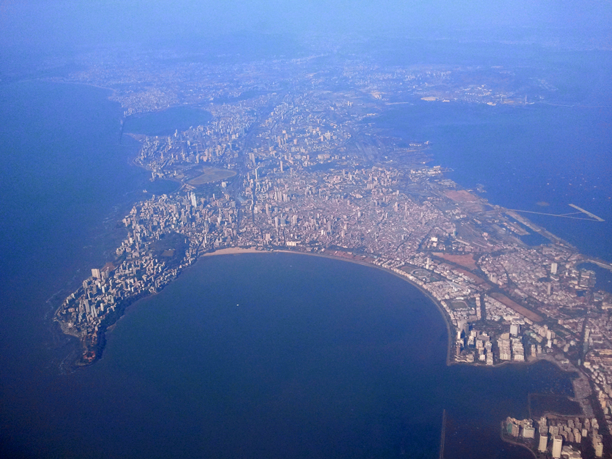

The Statue of Liberty represents a woman wearing a stola, a crown and sandals, trampling a broken chain, and with a torch in her raised right hand and a tabula ansata, or tablet where the date of the Declaration of Independence JULY IV MDCCLXXVI (1776) is written, in her left hand. The statue is on Liberty Island in New York Harbor, and it welcomes visitors, immigrants, and returning Americans travelling by ship
Also check out some other destinations.
Mumbai (Marathi: मुंबई), a cosmopolitan metropolis, earlier known as Bombay, is the largest city in India and the capital of Maharashtra state. Mumbai was originally a conglomeration of seven islands on the Konkan coastline which over time were joined to form the island city of Bombay. The island was in turn joined with the neighboring island of Salsette to form Greater Bombay. The city has an estimated metropolitan population of 21 million (2005), making it one of the world's most populous cities. Mumbai is undoubtedly the commercial capital of India and is one of the predominant port cities in the country. Mumbai's nature as the most eclectic and cosmopolitan Indian city is symbolized in the presence of Bollywood within the city, the centre of the globally-influential Hindi film and TV industries. It is also home to India's largest slum population.
There is a lot to do in Mumbai, but lack of space means that for outdoorsy activities, you need to head north, often outside city limits. In the Northwestern suburbs and Thane, you will find opportunities for water sports like H20[51] at Girgaum Chowpatty. There are two golf courses in the city, the more famous one in Chembur[52] in the Harbor suburbs. Mumbai has a vibrant theater scene with plays in many languages including English, Hindi, Gujarati, and Marathi. While South Mumbai has frequent performances, the best organized theater effort is at Prithvi theater, Juhu in the Western Suburbs. There are plenty of opportunities to enjoy Indian classical music and dance. While not a patch on the Sabhas of Chennai, you will find frequent performances of Carnatic music in Shanmukhananda Hall, Matunga in the South Central suburbs. Mumbai is also usually the first stop for Western pop and rock stars visiting India, which they usually do when they are over 50. The Rock scene is very good in Mumbai. These are very safe to go to and are recommended for rock fans. Most bands cover heavy metal acts like Pantera, Six feet under, and Slipknot, but at places like 'Not just jazz by the bay', there are treats for Jazz fans, as well. To try to find places with specific music tastes try asking students outside Mumbai's colleges. Western classical music performances are rarer. However most classical music performances along with other art forms are regularly performed at NCPA [53] and Tata Theatre [54], both situated next to the the narrow strip at Nariman Point.